<template>
<div class="container" id="help-content">
<div class="w3-container">
	<h3>Help</h3>
</div>
	<div class="w3-container" id="helpsection_loginpage">
		<h4>Login page <a href="#wayback" id="link_to_top">^top</a></h4>
		<p>Welcome to the B2NOTE annotation service.</p>
		<p>B2NOTE is currently designed as a crowdsourcing service which implies that all the annotations are accessible publicly. To guarantee on one side your privacy and on the other side to keep track of the origin of annotation records, you must first <a href="#helpsection_registrationpage">register to create an annotator profile</a> with a pseudonym which will be used to publish your annotation.</p>
		<p style="text-align:center;">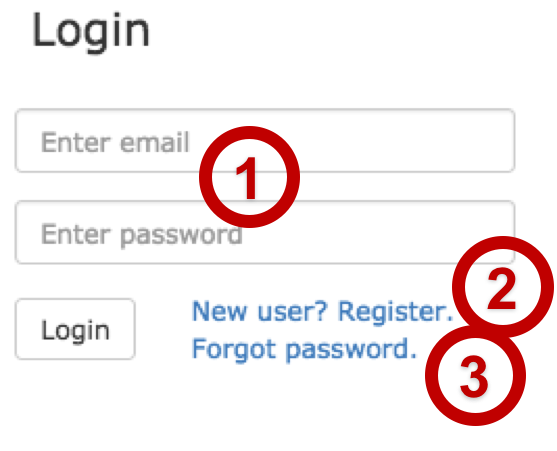</p>
		<p>This page is the entry point to access the service and allows you either <a href="#helpsection_registrationpage">register</a> as first time user (2) or log in directly if you already created an account (1). In case you forgot your password, you can re-initialize it by clicking on the link “Forgot password” (3)</p>
	</div>

	<div class="w3-container" id="helpsection_registrationpage">
		<h4>Registration<a href="#wayback" id="link_to_top">^top</a></h4>
		<p>Fill in the required information to create an annotator profile and do not forget to enter the captcha before submitting.</p>
		<p style="text-align:center;">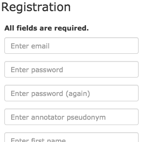</p>
		<p><br></p>
		<p style="text-align:center;">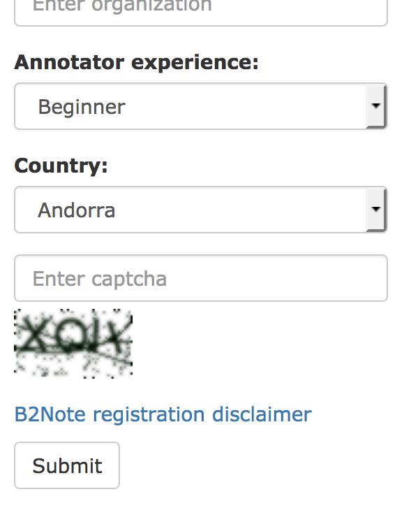</p>
		<p>If you forgot to fill-in some information or provided an invalid email address, a red error message will appear above the field to correct.</p>
		<p>Upon successful registration you should be redirected to the <a href="#helpsection_loginpage">Login page</a>.</p>

	</div>

	<div class="w3-container" id="helpsection_mainpage">
		<h4>Main page <a href="#wayback" id="link_to_top">^top</a></h4>
		<p>Create and sum-up annotations.</p>
		<p>Why annotating? Using B2NOTE you can add and manage extra information (“annotations”) about data files hosted by a EUDAT service (a <a href="https://trng-b2share.eudat.eu" target="_blank">B2SHARE training instance</a> during the pilot phase). Then use the annotations for finding files of interest and identifying new user-specific datasets.</p>
		<p style="text-align:center;">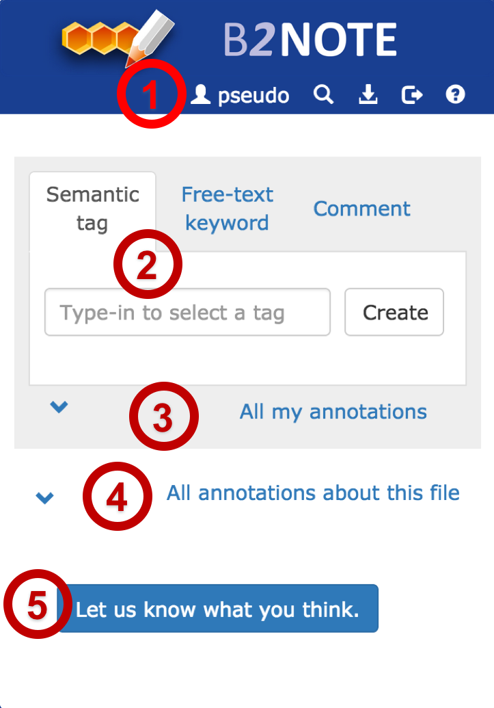</p>
		<p>This is the B2NOTE service main page. It contains the following elements:</p>
		<ol>
			<li><b><a href="#help_subsection_navigation_bar">Navigation bar</a></b>: access different functionalities of the B2NOTE service.</li>
			<li><b><a href="#help_subsection_main_panel">Main panel</a></b>: create an annotation.</li>
			<li><b><a href="#help_subsection_main_allmy">“All my annotations”</a></b>: visualise a summary of your annotations and access more detailed information.</li>
			<li><b><a href="#help_subsection_main_allann">“All annotations about this file”</a></b>: visualise a summary of the annotations about the current file and access more detailed information.</li>
			<li><b><a href="#help_subsection_main_feedback_button">Feedbacks button</a></b>: assess the service, request a new feature or report a bug.</li>
		</ol>


		<h5 id="help_subsection_navigation_bar">Navigation bar</h5>
		<p style="text-align:center;">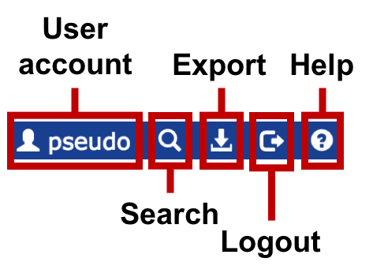</p>
		<ul>
			<li><p><b><a href="#helpsection_useraccountpage">"User account</a></b>: access your annotator profile information.</p></li>
			<li><p><b><a href="#helpsection_helpsection_searchpage">Search</a></b>: find files using annotations and export the resulting datasets.</p></li>
			<li><p><b><a href="#helpsection_helpsection_exportpage">Export</a></b>: export annotations in <a href="http://json-ld.org">JSON-LD</a> (linked-data) format.</p></li>
			<li><p><b>Logout</b>: log out of the B2NOTE service, terminates the current user session.</p></li>
			<li><p><b><a href="#wayback">Help</a></b>: access the help section for page you are visiting.</p></li>
		</ul>

		<h5>Navigation bar</h5>
		<p>At the top of other pages additional shortcut links allow quick navigation to previous pages or straight back to the <a href="#helpsection_mainpage">B2NOTE console main page</a>.</p>
		<p style="text-align:center;">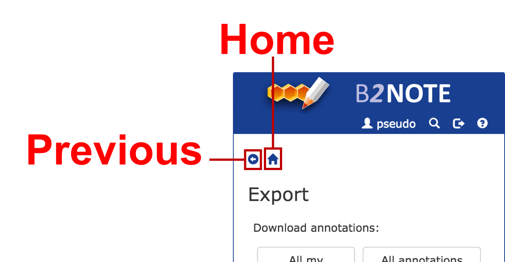</p>
		<ul>
			<li><p><b>Previous</b>: previously accessed page.</p></li>
			<li><p><b><a href="#helpsection_mainpage">Home</a></b>: the B2NOTE console main page.</p></li>
		</ul>

		<h5 id="help_subsection_main_panel">Main panel</h5>
		<p>Create annotations.</p>
		<p>The main panel is divided-up into 3 tabs. Each tab contains a simple form for creating an annotation of one of the 3 types defined in B2NOTE.</p>
		<p style="text-align:center;">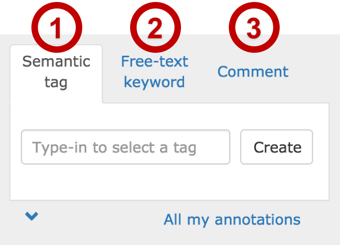</p>
		<ol>
			<li><p><b><a href="#help_subsection_creating_semantic">Semantic tag</a></b>: create an annotation that uses a term defined in a controlled vocabulary as a tag.</p></li>
			<li><p><b><a href="#help_subsection_creating_keyword">Free-text keyword</a></b>: create an annotation that uses your own keyword as a plain-text tag.</p></li>
			<li><p><b><a href="#help_subsection_creating_comment">Comment</a></b>: create an annotation containing a longer piece of text.</p></li>
		</ol>

		<h6 id="help_subsection_creating_semantic">Creating a semantic tag annotation</h6>
		<p>The semantic tag annotations use a term defined in a controlled vocabulary as a tag. This type of annotations thus benefits from curated and uniquely identified linked-data material.</p>
		<p style="text-align:center;">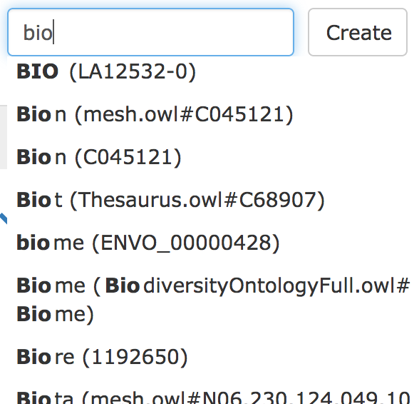</p>
		<p>Clicking the text-area then typing-in the first letters of the term you want triggers the autocomplete functionality, which provides a list of suggestions.</p>
		<p>From the list of suggestions, you can then select your term of interest amongst the extensive B2NOTE index.</p>
		<p style="text-align:center;">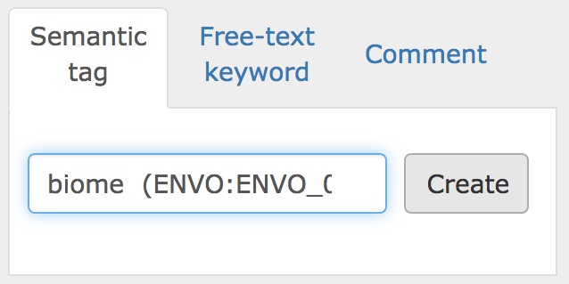</p>
		<p>After selecting one of the suggestions, click the <b>“Create” button</b> to create the annotation.</p>

		<h6 id="help_subsection_creating_keyword">Creating a free-text keyword annotation</h6>
		<p>Free-text keyword annotations are designed for cases when the exact term you want is missing from the <a href="#help_subsection_creating_semantic">“Semantic tag” autocomplete list of suggestions</a> and you want a plain-text tag to be used in the annotation.</p>
		<p>Annotations of this type contain plain text information as opposed to linked-data, thus not allowing the full range of benefits provided by the <a href="#help_subsection_creating_semantic">“Semantic tag” type</a>.</p>
		<p style="text-align:center;">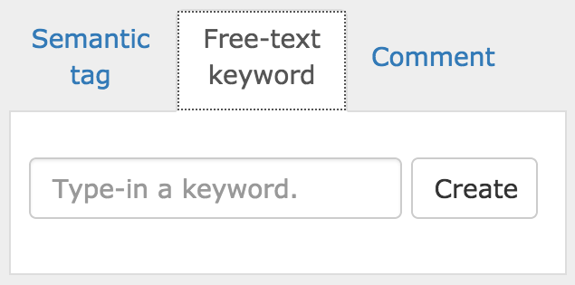</p>
		<p>After typing the text for your custom keyword in the text-area, click the <b>“Create” button</b> to create the annotation.</p>

		<h6 id="help_subsection_creating_comment">Creating a comment annotation</h6>
		<p>Comment annotations are designed for annotating using longer pieces of text. That is, possibly more verbose text not intended for the purpose of tagging a document, such as commenting or leaving some evaluating or general quality feedback.</p>
		<p>Annotations of this type also, like the “free-text keyword” type, contain plain text information as opposed to linked-data, thus not allowing the full range of benefits provided by the <a href="#help_subsection_creating_semantic">Semantic tag” type</a>.</p>
		<p style="text-align:center;">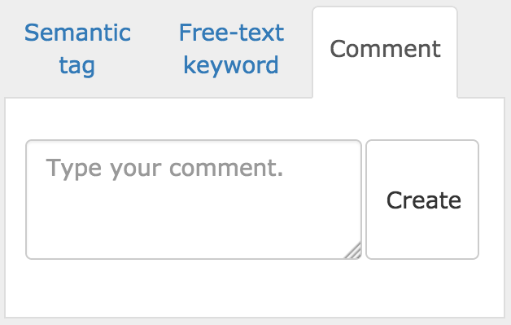</p>
		<p>After typing-in the text of the comment, click the <b>"Create" button</b> to create the annotation.</p>
		<p style="text-align:center;">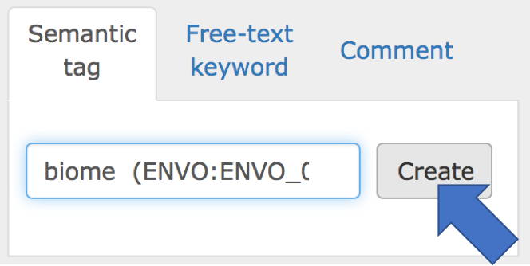</p>
		<p>After selecting a semantic tag or typing-in a free-text keyword or comment text, click the <b>“Create” button</b> to create the annotation.</p>
		<p style="text-align:center;">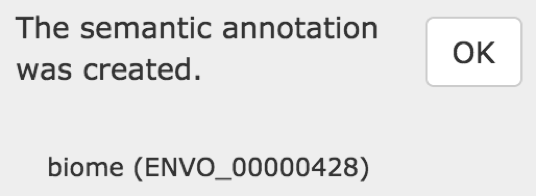</p>

		<h6 id="help_subsection_create_restrictions">Some conditions prevent annotations from being created.</h6>
		<ol>
			<li>
				<p style="text-align:center;">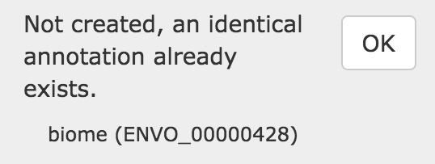</p>
				<p><b>Duplicate</b>: it is not possible to create an annotation that would be a duplicate of an existing annotation. So a semantic tag or free-text tag annotation can not use the <u>same tag about the same file</u> as another annotation. When attempting to do so, an alert will be displayed informing you that this is the case.</p>
			</li>
			<li>
				<p style="text-align:center;">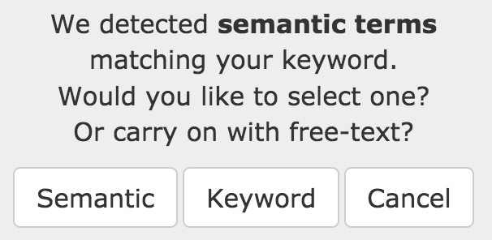</p>
				<p><b>Semantic equivalent</b>: attempting to create a <u>free-text keyword</u> annotation using a label identical to an ontology term referenced by B2NOTE, triggers an alert asking you to confirm the type of annotation you want to create:</p>
				<ul>
					<li><p><b>Semantic</b>: select a semantic tag instead of your free-text keyword.</p></li>
					<li><p><b>Keyword</b>: confirm creating an annotation using your free-text keyword.</p></li>
					<li><p><b>Cancel</b>: cancel the annotation creation.</p></li>
				</ul>
		    </li>
			<li>
				<p style="text-align:center;">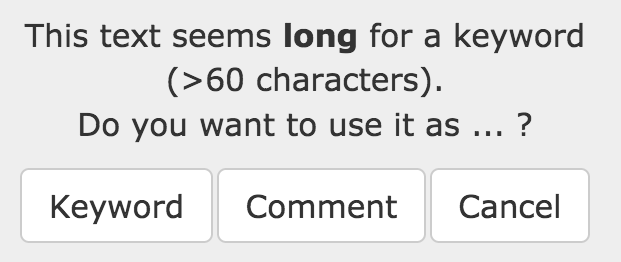</p>
				<p><b>Long keyword</b>: attempting to create a free-text keyword annotation with a tag label longer than 60 characters will trigger an alert asking to confirm the type of annotation you want to create:</p>
				<ul>
					<li><p><b>Keyword</b>: for an annotation of the Free-text Keyword type.</p> </li>
					<li><p><b>Comment</b>: for an annotation of the Comment type.</p></li>
					<li><p><b>Cancel</b>: to cancel the annotation creation.</p></li>
				</ul>
			</li>
		</ol>

		<h5 id="help_subsection_main_allmy">“All my annotations” section</h5>
		<p style="text-align:center;">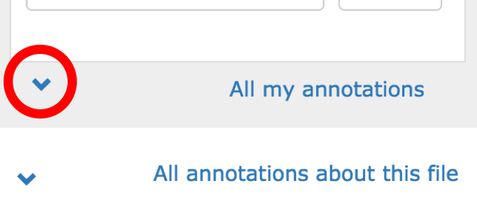</p>
		<p>Click the leftmost chevron icon (circled in red above) to unfold a summary table with the number of annotations of each type that were <b>created by you</b>. </p>
		<p style="text-align:center;">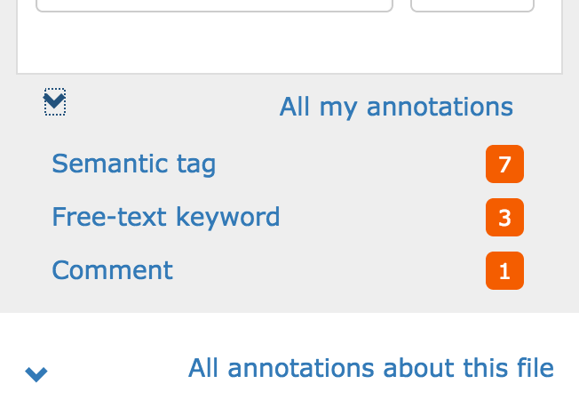</p>
		<ul>
			<li><p>Click the <b>annotation type links</b> or <b>numbered badge</b> of each row to a <a href="#help_subsection_myann_detail_table">summary table</a> with more detailed information about corresponding annotations.</p></li>
			<li><p>Click the <b><a href="#helpsection_myannotationspage">All my annotations”</a></b> section title to the <a href="#helpsection_myannotationspage">page containing all the summary tables</a> about annotations created by you.</p></li>
		</ul>

		<h5 id="help_subsection_main_allann">“All annotations about this file” section</h5>
		<p style="text-align:center;">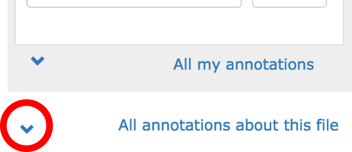</p>
		<p>Click the leftmost chevron icon (circled in red above) to unfold a summary table with the number of annotations about the current file of each type that were created by other users (<b>blue</b> badges) and those that were created by you (<b>orange</b> badges).</p>
		<p style="text-align:center;">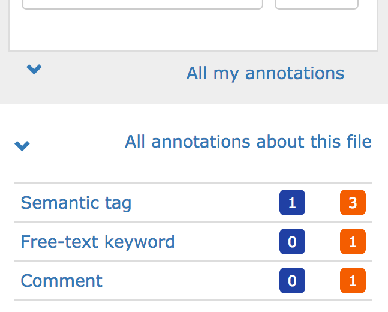</p>
		<ul>
			<li><p>Click each <b>annotation type link</b> or <b>numbered badge</b> to a summary table with more detailed information about corresponding annotations.</p></li>
			<li><p>Click the <b><a href="#helpsection_allannotationspage">“All annotations about this file”</a></b> section title to the page containing all summary tables for annotations created about the file.</p></li>
		</ul>

		<h5 id="help_subsection_main_feedback_button">Feedbacks button</h5>
		<p style="text-align:center;">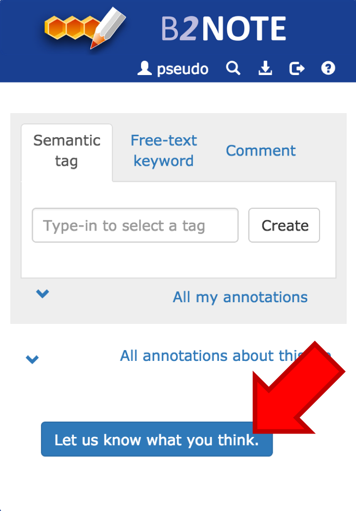</p>
		<p><b>“Let us know what you think” button</b>: access the <a href="#helpsection_feedbackpage">feedback page</a> with forms for providing us an assessment about B2NOTE, requesting a new feature or reporting a bug.</p>
	</div>

	<div class="w3-container" id="helpsection_myannotationspage">
		<h4>My annotations page <a href="#wayback" id="link_to_top">^top</a></h4>
		<p>Review and manage your existing annotations.</p>
		<p>Access this page from the B2NOTE console main page by clicking the <a href="#helpsection_mainpage">“All my annotations” link</a>.</p>
		<p style="text-align:center;">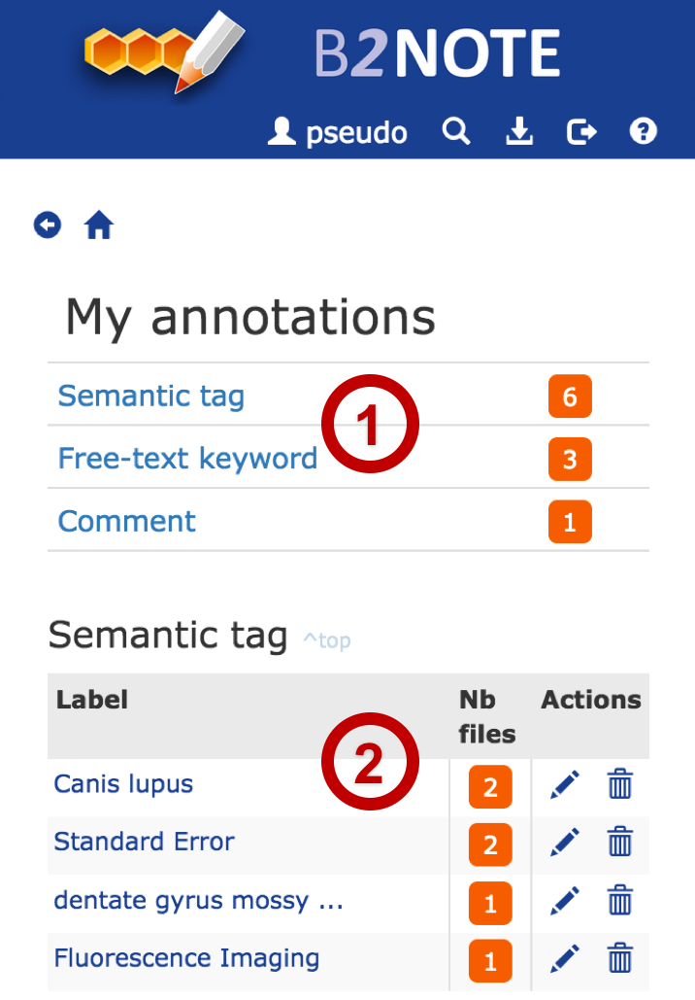</p>
		<ol>
			<li><p><b><a href="#help_subsection_myann_summ_table">Summary table</a></b>: showing how many annotations of each type were created by you and linking to the corresponding detailed information tables.</p></li>
			<li><p><b><a href="#help_subsection_myann_detail_table">Detailed information table</a></b>: on this page there are 3 such tables, one for each type of annotation. They show the labels of corresponding annotations that were created by you, link to individual annotation data and links for editing or deleting each annotation.</p></li>
		</ol>
		<h5 id="help_subsection_myann_summ_table">Summary table</h5>
		<p>Referencing the number of annotations of each type that were created by you.</p>
		<p style="text-align:center;">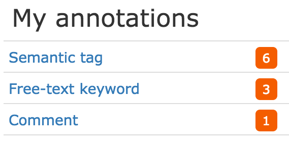</p>
		<p>Click each <b>link</b> or <b>numbered badge</b> to a table containing more detailed information about annotations of the corresponding type (see below).</p>

		<h5 id="help_subsection_myann_detail_table">Detailed information table</h5>
		<p style="text-align:center;">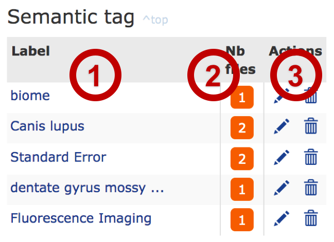</p>
		<p>There is one such table per annotation type (Semantic tag, Free-text keyword and Comment). Each row of the table features:</p>
		<ol>
			<li><p><b><a href="#helpsection_annotationsummarypage">Label of the annotation</a></b>: click to access detailed information about the tag.</p></li>
			<li><p><b><a href="#helpsection_annotationsummarypage">Numbered badge</a></b>: reporting how many of your annotations use the same tag. Click to access the corresponding list of files and detailed information about the tag. There are no numbered badges in the Comment annotation table since these annotations are by definition unique.</p></li>
			<li><p><b>Management options</b>:</p>
				<ul>
					<li><p><b><a href="#helpsection_editpage">Pen icon</a></b>: edit the corresponding annotation.</p></li>
					<li><p><b><a href="#helpsection_deletepage">Bin icon</a></b>: delete the corresponding annotation.</p></li>
				</ul>
			</li>
		</ol>
	</div>

	<div class="w3-container" id="helpsection_allannotationspage">
		<h4>All annotations page <a href="#wayback" id="link_to_top">^top</a></h4>
		<p>Review existing annotations about a file.</p>
		<p>Access this page from the B2NOTE console main page by clicking the <a href="#helpsection_mainpage">“All annotations about this file” link</a>.</p>
		<p style="text-align:center;">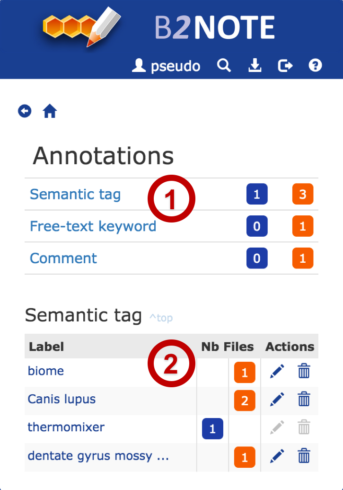</p>
		<ol>
			<li><p><b><a href="#help_subsection_allann_summ_table">Summary table</a></b>: showing how many annotations of each type were created about the current file and linking to the corresponding detailed information tables.</p></li>
			<li><p><b><a href="#help_subsection_allann_detail_table">Detailed information table</a></b>: on this page there are 3 such tables, one for each type of annotation. They show the labels of corresponding annotations, link to individual annotation data and links for editing or deleting each annotation.</p></li>
		</ol>
		<h5 id="help_subsection_allann_summ_table">Summary table</h5>
		<p>Referencing the number of annotations of each type that were created, either by other users (<b>blue badges</b>) or yourself (<b>orange badges</b>).</p>
		<p style="text-align:center;"></p>
		<p>Click each <b>link</b> or <b>numbered badge</b> to a table containing more detailed information about annotations of the corresponding type (see below).</p>

		<h5 id="help_subsection_allann_detail_table">Detailed information table</h5>
		<p style="text-align:center;">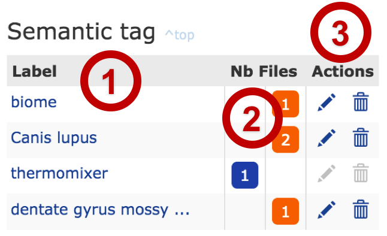</p>
		<p>There is one such table per annotation type (Semantic tag, Free-text keyword and Comment). Each row of the table features:</p>
		<ol>
			<li><p><b><a href="#helpsection_annotationsummarypage">Label of the annotation</a></b>: click to access detailed information about the tag.</p></li>
			<li><p><b><a href="#helpsection_annotationsummarypage">Numbered badge</a></b>: reporting how many annotations use the same tag. Click to access the corresponding list of files and detailed information about the tag. There are no badges in the Comment annotation table.</p></li>
			<ul>
				<li><p><b>Blue badge</b>: annotations created by other users.</p></li>
				<li><p><b>Orange badge</b>: annotations created by you.</p></li>
			</ul>
			<li><p><b>Management options</b>: these actions are disabled (pale grey icons) for annotations created by other users.</p>
				<ul>
					<li><b><a href="#helpsection_editpage">Pen icon</a></b>: edit the corresponding annotation.</li>
					<li><b><a href="#helpsection_deletepage">Bin icon</a></b>: delete the corresponding annotation.</li>
				</ul>
			</li>
		</ol>
	</div>

	<div class="w3-container" id="helpsection_annotationsummarypage">
		<h4>Annotation summary page <a href="#wayback" id="link_to_top">^top</a></h4>
		<p>Visualise the content of an individual annotation.</p>
		<p>Access this page from detailed summary tables of the <a href="#helpsection_myannotationspage">“My Annotations”</a> or <a href="#helpsection_allannotationspage">"All annotations” pages</a>.</p>
		<p style="text-align:center;">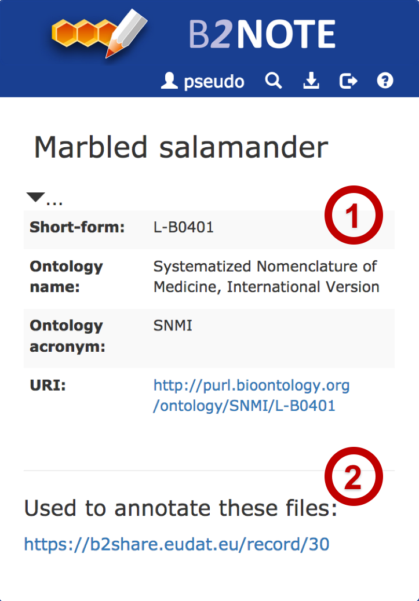</p>
		<ol>
			<li><p><b>Annotation content</b>: information about the annotation label. For Semantic tags this is information about the original ontology term, including its <a href="https://www.w3.org/wiki/URI">URI</a> as an hyperlink for direct access. Click the topmost chevron icon to fold or unfold the table.</p></li>
			<li><p><b>List of files</b>: direct links to the files that were annotated using the same annotation tag.</p></li>
		</ol>
	</div>


	<div class="w3-container" id="helpsection_editpage">
		<h4>Edit annotation page <a href="#wayback" id="link_to_top">^top</a></h4>
		<p>Change an annotation.</p>
		<p style="text-align:center;">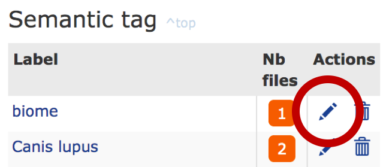</p>
		<p>Access this page by clicking one of the pen icons (circled in red above) in tables of the <a href="#helpsection_myannotationspage">“My Annotations”</a> or <a href="#helpsection_allannotationspage">"All annotations” pages</a>.</p>
		<h5 id="help_subsection_edit_menu">Edit menu</h5>
		<p style="text-align:center;">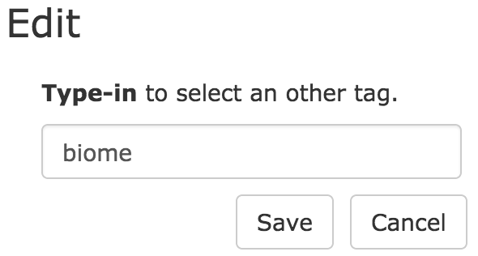</p>
		<p>Allows the tag of an individual annotation to be modified.</p>
		<p style="text-align:center;">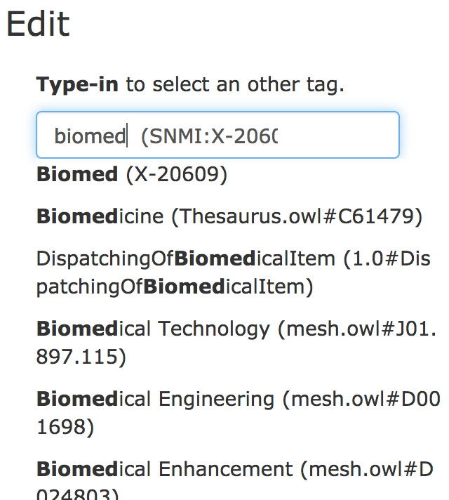</p>
		<p>Type inside the textarea to select a different semantic tag from the list of suggestions (in case of editing a semantic tag) or modify the text of free-text annotations (i.e. keyword or comment types).</p>
		<p style="text-align:center;">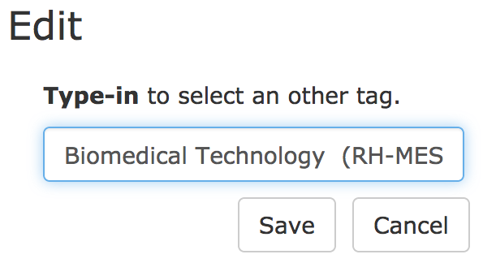</p>
		<ul>
			<li><p><b>Save</b>: enforce the modified tag as the new tag.</p></li>
			<li><p><b>Cancel</b> avoid changing the original tag.</p></li>
		</ul>
		<p>The process of editing the annotation tag is very similar to that of <a href="#help_subsection_creating_semantic">creating the tag for a new annotation</a> from the main page interface. The same <a href="#help_subsection_create_restrictions">restrictions and alerts</a> apply. In particular it is not allowed to generate a <b><a href="#help_subsection_create_restrictions">duplicate</a></b> (same tag about the same file) annotation.</p>
	</div>

	<div class="w3-container" id="helpsection_deletepage">
		<h4>Delete annotation page <a href="#wayback" id="link_to_top">^top</a></h4>
		<p>Delete an annotation.</p>
		<p style="text-align:center;">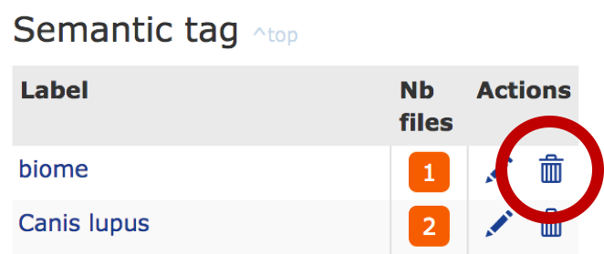</p>
		<p>Access this page by clicking one of the bin icons (circled in red above) in tables of the <a href="#helpsection_myannotationspage">“My Annotations”</a> or <a href="#helpsection_allannotationspage">"All annotations” pages</a>.</p>
		<h5 id="help_subsection_delete_menu">Delete menu</h5>
		<p>Allows deleting an individual annotation. This option is only available for the <u>annotations that <b>you</b> have created</u>.</p>
		<p style="text-align:center;">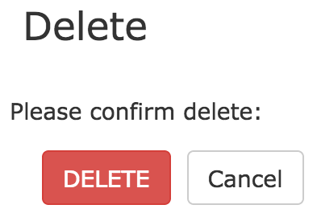</p>
		<ul>
			<li><p><b>(red) Delete</b>: confirm that the annotation is to be deleted.</p></li>
			<li><p><b>Cancel</b>: avoid deleting the annotation.</p></li>
		</ul>
	</div>

	<div class="w3-container" id="helpsection_searchpage">
		<h4>Search page <a href="#wayback" id="link_to_top">^top</a></h4>
		<p>Use annotations to search for files.</p>
		<p>Access this page by clicking the magnifying glass icon in the <a href="#help_subsection_navigation_bar">navigation bar</a> from other pages of the B2NOTE console.</p>
		<p>The Search functionality is designed for identifying files annotated with some particular tag information.</p>
		<p style="text-align:center;">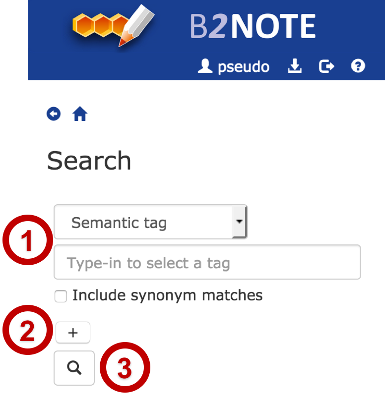</p>
		<p>Define your search query by filling-up the form of the Search menu.</p>
		<ol>
			<li><p><b><a href="#help_subsection_search_selector">Search selector</a></b>: define a term to search for.</p></li>
			<li><p><b><a href="#help_subsection_plus_sign_button">Plus sign button</a></b>: add new terms to the search query.</p></li>
			<li><p><b><a href="#help_subsection_magnifying_glass_button">Magnifying glass button</a></b>: launch the search.</p></li>
		</ol>
		<h5 id="help_subsection_search_selector">Search selector</h5>
		<p style="text-align:center;">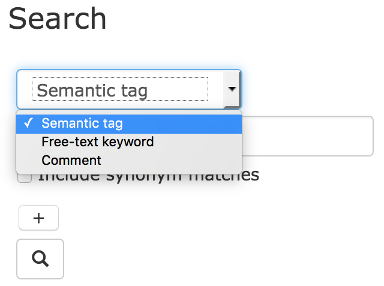</p>
		<p>First select a particular annotation type.</p>
		<p style="text-align:center;">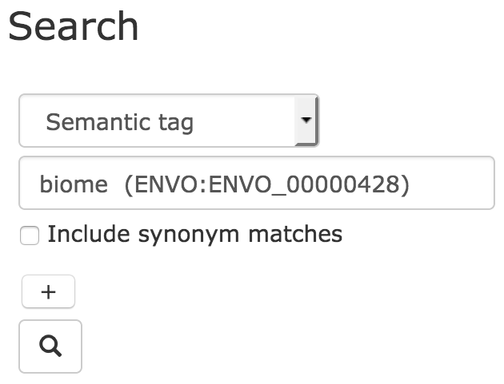</p>
		<p>Then type in the textarea to select (in case of a semantic tag), or define a particular tag label to be searched on.</p>
		<p>In the case of semantic tag annotations, a <b>tick box</b> underneath the textarea allows you to require that the <u>synonyms referenced for the term in the original ontology</u> be included, so that files annotated with tags matching the synonyms also get <b>reported in the search results</b>.</p>
		<p style="text-align:center;">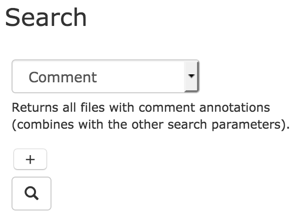</p>
		<p>Select the <b>Comment annotation type</b> for including in the search results those files for which at least one of their annotation is of the “Comment” type.</p>
		<h5 id="help_subsection_plus_sign_button">Plus sign button</h5>
		<p style="text-align:center;">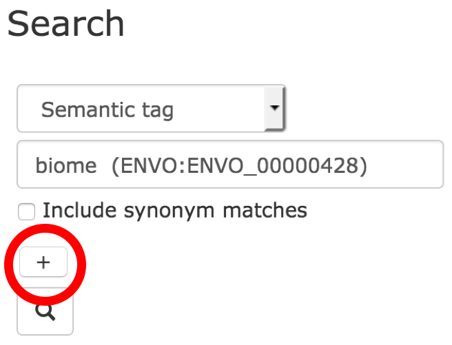</p>
		<p>Click the “plus sign” button (circled in red above) to add new conditions to your search query by adding new field to the search form.</p>
		<p style="text-align:center;">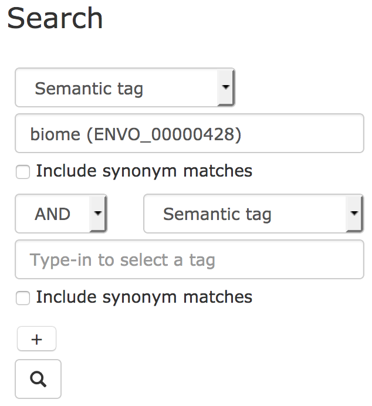</p>
		<p>The additional search fields are identical to the initial form with the <u>addition of a selector for the logical relation</u> to apply between search conditions.</p>
		<p style="text-align:center;">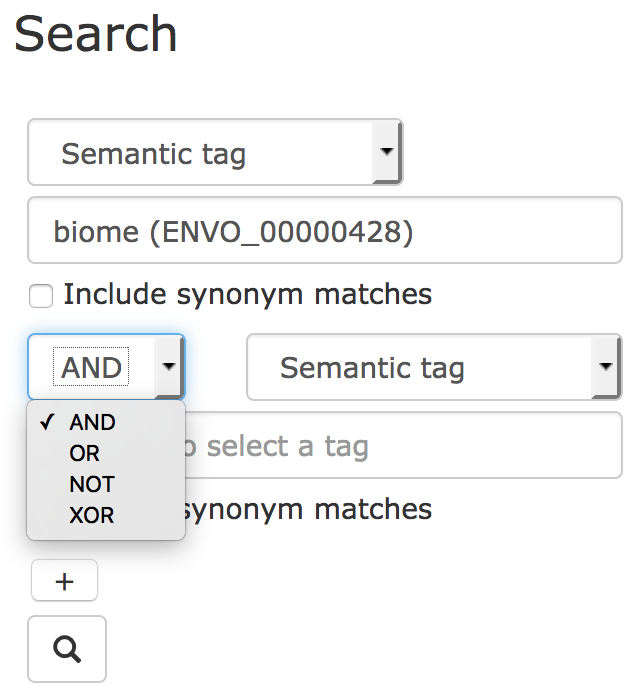</p>
		<ul>
			<li><p><b>AND</b>: both conditions true. </p></li>
			<li><p><b>OR</b>: at least one condition true. </p></li>
			<li><p><b>NOT</b>: corresponding condition not true. </p></li>
			<li><p><b>XOR</b>: strictly one or the other condition true. </p></li>
		</ul>
		<h5 id="help_subsection_magnifying_glass_button">Magnifying glass button</h5>
		<p style="text-align:center;">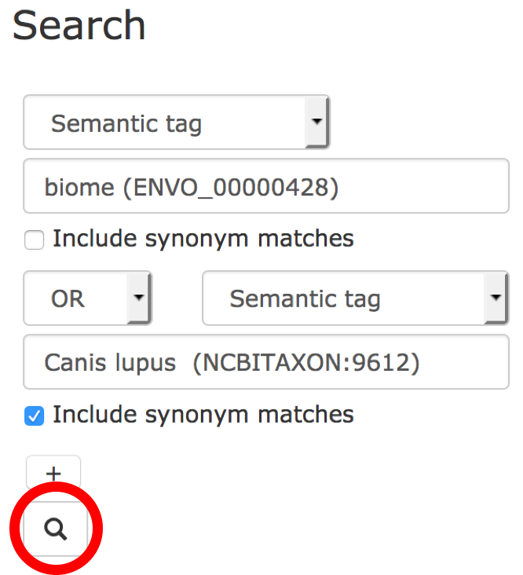</p>
		<p>Click the <b>“magnifying glass” button</b> (circled in red above) to <u>launch the search</u> according to the parameters thus defined.</p>
		<p>You obtain the list of files with annotations matching your query displayed in the <a href="#helpsection_searchresultspage">search results page</a> (see below).</p>
	</div>

	<div class="w3-container" id="helpsection_searchresultspage">
		<h4>Search results <a href="#wayback" id="link_to_top">^top</a></h4>
		<p>Identify files with annotations matching a search query.</p>
		<p>Access this page by clicking the <a href="#helpsection_searchpage">magnifying glass button</a> after filling up the form of the Search page for submitting a search query.</p>
		<p style="text-align:center;">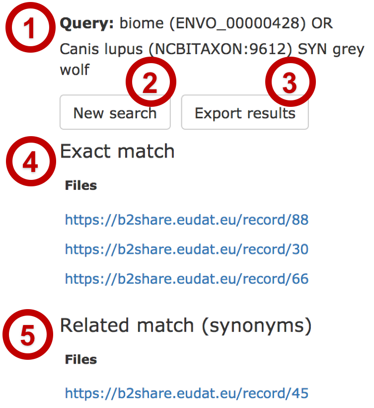</p>
		<ol>
			<li><p><b>Search query</b>: formulated in plain text.</p></li>
			<li><p><b><a href="#helpsection_searchpage">New search</a></b>: define and execute a new search.</p></li>
			<li><p><b><a href="#helpsection_exportsearchpage">Export results</a></b>: for selecting within the search results those particular files about which annotation information should be exported.</p></li>
			<li><p><b>Exact match</b>: list the files that were retrieved on the exact match of their annotation content with the search query conditions.</p></li>
			<li><p><b>Related match (synonyms)</b>: list the files that were retrieved because their annotation label matched with a <b>synonym</b> of a particular semantic tag (see <a href="#helpsection_searchpage">Search page</a>) included in the search query. If synonyms were listed for the original ontology class, then these should appear in the above query formulated as plain text.</p></li>
		</ol>
	</div>

	<div class="w3-container" id="helpsection_exportsearchpage">
		<h4>Export search results page <a href="#wayback" id="link_to_top">^top</a></h4>
		<p>Define datasets of files from search results and export their annotation information.</p>
		<p>Access this page by clicking the <a href="#helpsection_searchresultspage">“Export results” button</a> of the Search results page.</p>
		<p style="text-align:center;">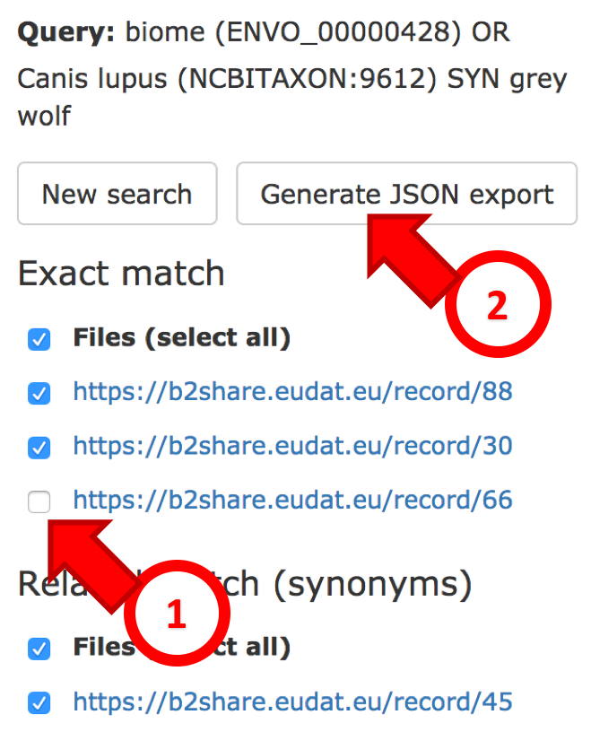</p>
		<p>The layout of this page is similar to that of the <a href="#helpsection_searchresultspage">“search results page”</a>, with additional <b>tick boxes (1)</b> for selecting/un-selecting the listed files about which annotation information should be included for exporting.</p>
		<p>Once file selection is completed, clicking the <b>“Generate JSON export” button (2)</b> loads a <a href="#helpsection_exportpage">page displaying the corresponding list of annotations in JSON-LD format</a> and making it available for download.</p>
		<p style="text-align:center;">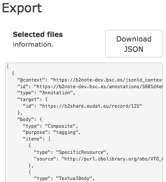</p>
	</div>

	<div class="w3-container" id="helpsection_exportpage">
		<h4>Export page<a href="#wayback" id="link_to_top">^top</a></h4>
		<p>Download annotations in JSON-LD format.</p>
		<p>Access this page by clicking the <a href="#help_subsection_navigation_bar">“Export” icon in the navigation bar</a> from other pages of the B2NOTE console.</p>
		<p style="text-align:center;">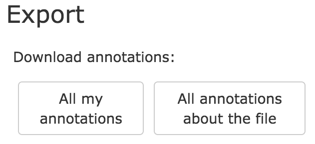</p>
		<ul>
			<li><p><b>All my annotations</b>: display the information of all your annotations in <a href="http://json-ld.org">JSON-LD</a> (linked-data) format and ready to download.</p></li>
			<li><p><b>All annotations about the file</b>: display the information of annotations about the current file from all users in <a href="http://json-ld.org">JSON-LD</a> (linked-data) format, and ready to download.</p></li>
		</ul>
		<p>Click one of the two buttons to a page with the following layout:</p>
		<p style="text-align:center;">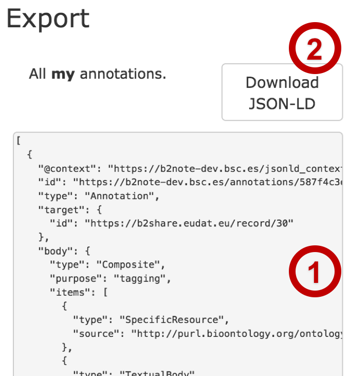</p>
		<ul>
			<li><p><b>Annotations information</b>: <a href="http://json-ld.org">JSON-LD (linked-data)</a> format.</p></li>
			<li><p><b>Download JSON-LD</b>: download the text file of the displayed <a href="http://json-ld.org">JSON-LD</a>.</p></li>
		</ul>
	</div>

	<div class="w3-container" id="helpsection_useraccountpage">
		<h4>User account page <a href="#wayback" id="link_to_top">^top</a></h4>
		<p>Visualise your annotator profile information.</p>
		<p>Access this page by clicking the <a href="#help_subsection_navigation_bar">User account icon in the navigation bar</a> page displaying the data filled-in during registration (user-specific information).</p>
		<p style="text-align:center;">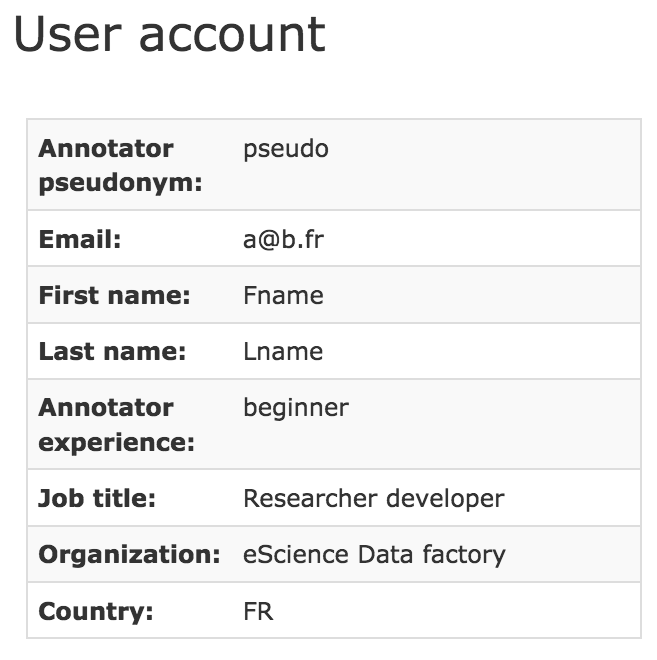</p>
		<p>This page displays your annotator profile information as filled-in during your registration to the service, with the obvious exception of the password field.</p>
		<p>This information is not accessible to other users.</p>
	</div>

	<div class="w3-container" id="helpsection_feedbackpage">
		<h4>Feedback page <a href="#wayback" id="link_to_top">^top</a></h4>
		<p>Provide your assessment, feature request or bug report about B2NOTE service.</p>
		<p>Access this page by clicking the <a href="#helpsection_mainpage">“Let us know what you think” button</a> at the bottom of the B2NOTE console main page.</p>
		<p>This page comprises a single panel divided-up in 3 tabs. Each tab contains a form for sending a different set of informations to the service maintainers.</p>
		<p style="text-align:center;">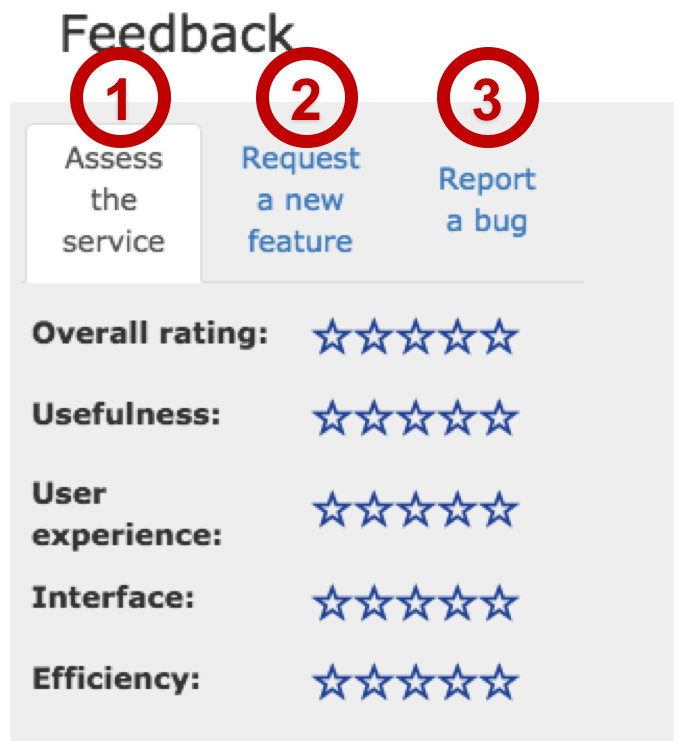</p>
		<ol>
			<li><p><b>Assess the service</b>: provide you ratings about the service and more specific comments.</p></li>
			<li><p><b>Request a new feature</b>: provide the description of a feature or functionality that could improve the service.</p></li>
			<li><p><b>Report a bug</b>: provide information describing a service disfunction that you identified.</p></li>
		</ol>
		<p>Each form is to be completed and submitted independently.</p>
		<p>Fill in the required information and do not forget to enter the captcha before submitting.</p>
	</div>

	<a href="#wayback" id="link_to_top">^top</a>

</div>

</template>
